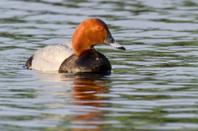
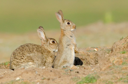
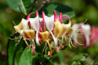
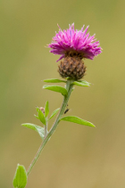

Home
About the Friends
History of the site
Wildlife at Straws Bridge
Latest
Wildlife Sightings
News and Events
Activity Pages
Gallery
Can You Help?
Directions
Next Meeting Date
Links to other websites

Biodiversity is a word we use to describe the different species of animals, insects and plants that live in a certain area. Straw's Bridge has an amazing biodiversity if you take the time to look for it.
Erewash Borough Council took it on and began restoration and development of the site as a wildlife habitat and local amenity. Since then it has become increasingly popular among both locals and visitors from further afield. While this is a good thing it means that there is a risk of conflict between the needs of visitors on the one hand and the wildlife and its habitat on the other. This is one reason behind the formation of the Friends of Straw's Bridge.
.jpg) Banded Demoiselle |
.jpg) Brown Argus |
 Birdsfoot Trefoil |
.jpg)
Great Crested Grebe
I'm sure everyone is aware it's a great spot for some of our more common birds such as Coots, Moorhens, Mallard Ducks and Mute Swans. It might surprise some to know it's also a great spot for waterbirds such as Great Crested Grebes, Tufted Ducks, Shovelars & Pochard. There are also visits by such birds as Teal and Goldeneye. It's not only the waterfowl that are common at Straw's. Swallows and Martins can be seen collecting mud for nestbuilding in the spring and many migrants take up residence through the summer such as Chiffchaffs & Sedge Warblers. We've even had real rarities such as a Great Reed Warbler.
.jpg)
Black Headed Gull
.jpg) Mute Swan |
 Pochard |
.jpg) Teal |
.jpg) Shoveler |
It's not only birds that make the area special. Mammals can be found. Rabbits and hares are joined by foxes and badgers. Water Voles frequent the Nutbrook and other small waterways and Bats can be seen on a summer's evening feeding on moths and insects. On the subject of insects the area in the summer is abundant with Dragonflies, Damselflies, Moths, Butterflies and spiders. Look in the meadows to the left of the main lake and Peewit Carr just beyond the two smaller ponds to find an abundance of insect life.
 Rabbit |
.jpg) Water Vole |
.jpg) Blue Tailed Damselfly |
.jpg) Common Blue Butterfly |
.jpg) Lacewing |
Peewit Carr is also an amazing site for wildflowers. Orchids, vetches and numerous species of wildflower can be found here. Throughout the summer it really is a site to behold, a true hay meadow full of beautiful plants. So next time you're down at Straw's Bridge take a little time to have a good look around. You just never know what you might find!
 Common Spotted Orchid |
.jpg) Forget-me-not |
 Honeysuckle |
 Knapweed |
Photographs by Caroline Pollard and Paul Shaw
Please Like Our Facebook Page To Keep Up To Date With Events, News And Developments
Take a look at our events page for more information